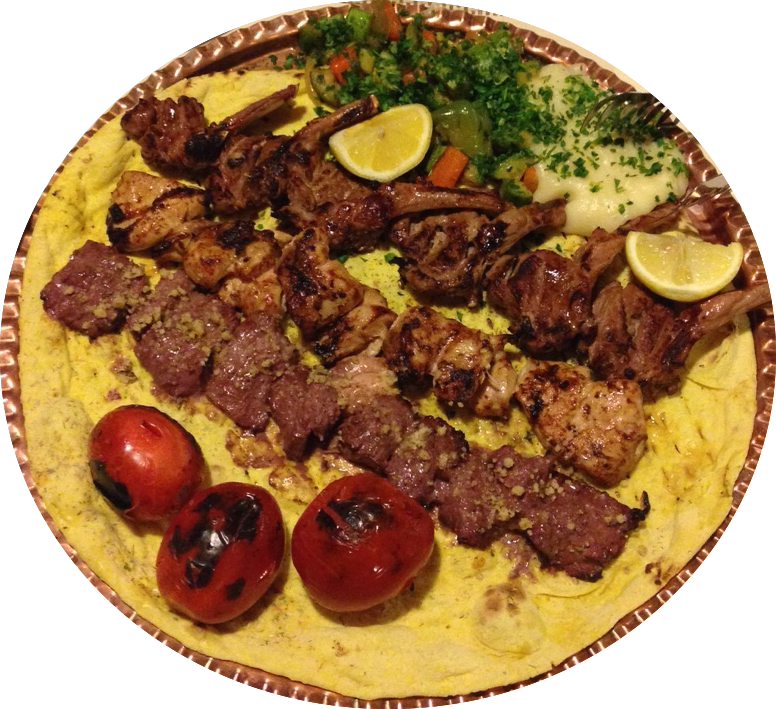
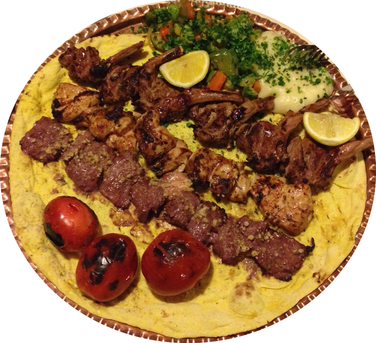

Hello World!
I want to show you my Iran.

My name is Sanam and I am Iranian American. Both of my parents were born and raised in Iran; my dad in Abadan and my mom in Isphahan. By high school, they and their families were living in Tehran, Iran's capital city. After high school, they were both shipped off to the United States for university; it was very common then for Iranians to study abroad. My parents met in Iran one summer vacation during college and were later married in Washington, DC. Unfortunately, none of their relatives from Iran were able to make the wedding, as it took place during the Iran-Iraq war, a war in which the U.S. supported Iraq under Sadaam Hussein. Fast forward 9 years later. My brother Bardia was born and then I followed, one year later. We've been lucky enough to visit Iran biannually since I was a baby.
Iran is an extraordinary place...the people, the food, the culture, the history, the landscape, the art, the architecture, the language, are all (in my non-biased opinion) unparalleled. The food deserves a second mention. Aint nothing like it.

 

Check out these videos if you don't believe me -
Anthony Burdain, Parts Unknown: Iran The Munchies Guide to Tehran Part 1/3
Cities I've Visited
- Tehran
- Isphahan
- Shiraz
- Hamedan
* I've also visited the Alborz mountains north of Tehran as well as a couple of towns by the Caspian sea.
Top 3 Misunderstandings about Iran
- The people are hostile towards America and the 'West.'
- Iran is filled with religious extremists.
- It is unsafe to visit Iran.
* Bet you didn't know you can ski in Iran...and it's quality skiing!
Iran's Neighborhood
| Country | Where it is | Language Spoken | Iraq | West | Arabic | Turkey | Northwest | Turkish | Armenia | North | Armenian | Azerbaijan | North | Azerbaijani | Turkmenistan | Southeast | Turkmen | Afghanistan | East | Dari | Pakistan | Southeast | Urdu |
|---|